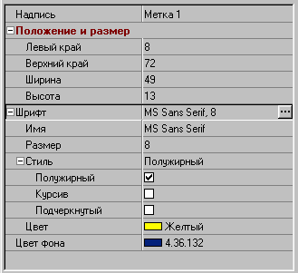
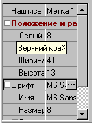
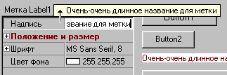

Инспектор объектов и метаданные
Мотивация и постановка задачи
При попытке сформулировать требования к инспектору объектов у меня получился такой список :
| · | инспектор должен иметь возможность работать с объектами любых типов. Не предполагается происхождение объектов от какого-либо специального базового класса, |
| · | должна существовать возможность инспектирования объектов, которые были созданы на предыдущих этапах разработки. Это случай, когда инспектор появляется в прикладной программе в результате ее эволюционного развития при длительном времени жизни программы. Инспектируемые объекты могут иметь различную природу, например, вообще быть не объектами, а, например, структурами данных (записями), располагаться в адресном пространстве другого процесса, или находиться на удаленной машине в локальной сети. Инспектор должен однообразно работать с объектами различной природы, |
| · | инспектируемые объекты могут выглядеть по-разному для разных пользователей или разных контекстов и могут предоставлять для инспекции различные наборы своих свойств. Например, с прикладной программой могут работать пользователи различных категорий: "новичок", "обычный пользователь", "эксперт". Естественно, что "эксперту" доступно большее число инспектируемых свойств, чем "новичку", |
| · | объекты могут иметь сложную внутреннюю структуру, то есть, содержать вложенные объекты, которые, в свою очередь, также могут иметь вложенные объекты. Вложенность объектов неограничена (в разумных пределах), |
| · | число инспектируемых свойств может быть достаточно большим, при этом должны существовать средства иерархической упорядоченности, то есть, свойства могут быть представлены, в общем случае, как элементы дерева, веточки которого можно сворачивать и разворачивать, |
| · | инспектор должен сохранять историю работы с различными объектами, то есть, при повторе инспекции объекта, внешний вид дерева его свойств должен быть таким же, как и при последней инспекции. Это означает, что инспектор должен сохранять историю сворачивания и разворачивания веточек, |
| · | имена свойств могут быть на любом языке, например, на русском, и могут включать произвольный набор символов. Имена могут иметь достаточно большую длину и составляться из нескольких слов, |
| · | должна существовать развитая система помощи, включающая, как минимум, два уровня по каждому инспектируемому свойству - подсказка и справка, |
| · | реализация всех этих условий не должна быть связана с большими трудозатратами со стороны программиста. |
Может показаться, что это завышенный набор требований, но, тем не менее, все перечисленные пункты были не придуманы, а продиктованы той реальной необходимостью, которую мне пришлось учитывать в одном из выполняемых мною проектов.
Как видно из перечисленных выше требований, объекты должны обладать существенно большим набором аттрибутов, чем это требуется нам, программистам, для работы с объектами внутри программного кода. Для обозначения этой дополнительной информации будем использовать термин "метаданные" или "аттрибуты". Приставка "мета" подчеркивает, что это данные, описывающие другие данные, то есть, "данные о данных". Именно такие термины используются в языке C# и в платформе .Net. Примером метаданных является информация RTTI, которую формирует компилятор Delphi. Очевидно также, что метаданные, формируемые Delphi недостаточны для удовлетворения всех поставленных требований, а такая возможность, как описание своих аттрибутов (доступная в C#), в Delphi отсутствует. Кроме того, нужно удовлетворить указанному выше требованию о том, что инспектор должен работать и с такими объектами, которые не были спроектированы в расчете на инспекцию.
При анализе поставленных требований я выделил четыре основные задачи, необходимые для создания инспектора. Каждой из этих задач посвящен в статье свой раздел:
| · | создание метаданных, размещение метаданных и доступ к ним, |
| · | создание прокси-объектов (заместителей), работающих с объектами различной природы и унифицирующих способ взаимодействия объектов с инспектором, |
| · | создание менеджера объектов, который изолирует визуальный компонент инспектора от инспектируемых объектов и метаданных, |
| · | создание собственно инспектора как визуального компонента. |
Метаданные
Можно придумать, вероятно, много различных способов организации метаданных. Например, метаданные объектов различных типов можно описывать в отдельном файле (или файлах) в каком-либо формате, например, как текст на языке XML. Структура метаданных может быть в этом случае сколь угодно сложной и содержать такие крупные разделы, как категория пользователя или локализация. Файлы метаданных можно распространять вместе с программой или внести их в ресурсы, размещаемые в самой программе или в DLL. Для доступа к метаданным потребуется некоторого рода база или список метаданных, индексируемых именем типа, а также XML-парсер для разбора текста.
Я остановил свой выбор на таком способе - хранение метаданных в виде статических классов, регистрируемых в реестре метаданных. Статическими классами будем называть классы, которые содержат только классовые методы и ничего больше. Особенностью таких классов является то, что с ними можно работать без динамического инстанцирования экземляров во время выполнения. Метаданные вводятся как локальные константные записи, доступ к которым выполняется с помощью классовых методов. Все классы метаданных порождаются от базового статического класса TGsvObjectInspectorTypeInfo, виртуальные классовые методы которого переопределяются в классах метаданных. Определение TGsvObjectInspectorTypeInfo выглядит так:
TGsvObjectInspectorTypeInfo = class
public
class function ObjectName(AObject: TObject): String; virtual;
class function TypeName: String; virtual;
class function TypeInfo: PGsvObjectInspectorPropertyInfo; virtual;
class function ChildrenInfo(Index: Integer):
PGsvObjectInspectorPropertyInfo; virtual;
class procedure FillList(AObject: TObject; List: TStrings); virtual;
class procedure ShowDialog(Inspector: TComponent;
Info: PGsvObjectInspectorPropertyInfo;
const EditRect: TRect); virtual;
class function IntegerToString(const Value: LongInt): String; virtual;
class function StringToInteger(const Value: String): LongInt; virtual;
class function CharToString(const Value: Char): String; virtual;
class function StringToChar(const Value: String): Char; virtual;
class function FloatToString(const Value: Extended): String; virtual;
class function StringToFloat(const Value: String): Extended; virtual;
class function ObjectToString(const Value: TObject): String; virtual;
end;
Не вдаваясь пока в подробности, опишем, в целом, назначение методов класса.
| · | ObjectName - метод возвращает имя конкретного экземпляра инспектируемого объекта. Объект (или его заместитель) передается функции как аргумент, |
| · | TypeName возвращает имя типа. Например, имя типа может быть таким - «Синхронный двигатель», а имя объекта - «Д 4/8», |
| · | TypeInfo предоставляет метаданные о типе в целом, а ChildrenInfo - о всех его свойствах. ChildrenInfo за одно обращение возвращает информацию об одном свойстве, которое индексируется аргументом Index. При выходе за индекс последнего свойства ChildrenInfo возвращает nil. Так выполняется итерация по всем свойствам - инспектор вызывает функцию ChildrenInfo с монотонно возрастающим (от нуля) значением индекса и завершает итерацию, когда функция возвращает nil, |
| · | FillList и ShowDialog реализуют необходимую функциональность в том случае, когда свойство представлено как список значений или когда для редактирования свойства требуется специализированный диалог-мастер. |
Все остальные функции реализуют различные вспомогательные преобразования, которые служат для преобразования значений свойств в строковый вид для отображения в инспекторе и, наоборот, преобразования строковых значений, измененных в инспекторе, к реальным типам свойств. Методы класса не являются абстрактными, а реализуют свою функциональность для некоторого общего случая (по умолчанию), например, в качестве имени объекта возвращается пустая строка, а преобразование из целого в строку выполняется стандартной функцией IntToStr. Это позволяет переопределять в наследуемых классах только некоторые, действительно нужные, методы.
Наибольший интерес для нас будет представлять тип PGsvObjectInspectorPropertyInfo - указатель на структуру типа TGsvObjectInspectorPropertyInfo. Данные именно этого типа возвращаются методами TypeInfo и ChildrenInfo. Каждое инспектируемое свойство (а также весь тип в целом) описывается константной записью. Для простоты опустим служебные поля, которые неважны с точки зрения метаданных, и которые не задаются в константной записи:
TGsvObjectInspectorPropertyInfo = record Name: String; Caption: String; Kind: TGsvObjectInspectorPropertyKind; Tag: LongInt; NestedType: String; NestedClass: TGsvObjectInspectorTypeInfoClass; Help: Integer; Hint: String; end; PGsvObjectInspectorTypeInfo = ^TGsvObjectInspectorTypeInfo;
| · | Поле Name содержит имя published-свойства в инспектируемом объекте или в его заместителе. Доступ к свойствам основан на RTTI и требует, чтобы инспектируемые объекты (или их заместители) компилировались с созданием RTTI, |
| · | Поле Caption содержит имя свойства, под которым оно будет отображаться в инспекторе, |
| · | Kind. Это поле декларирует особенности отображения значения свойства в инспекторе, например, значение может быть текстом, списком, множеством, сложным объектом, который редактируется специальным редактором и так далее, |
| · | Tag используется для задания специфических данных свойства. В текущей версии инспектора он использует только для описания свойств-множеств, |
| · | NestedType и NestedClass. Два этих поля предоставляют альтернативные возможности указания типа вложенного свойства. Здесь целесообразно отметить, что вложенные свойства рассматриваются и описываются как самостоятельные - это позволяет описать их один раз и использовать в других классах метаданных. Забегая вперед, скажу что NestedType используется в том случае, если класс метаданных регистрируется в реестре метаданных, а NestedClass - если вложенный объект описывается в известном программном модуле и доступен при компиляции. Вложенное свойство трактуется весьма широко и, в общем случае, служит для ссылки на другой класс метаданных, который может быть действительно сложным объектом, или предоставлять метаданные об одном-единственном простом свойстве. Важным здесь является то, что классы метаданных могут ссылаться на другие метаклассы и создавать внутреннюю иерархическую структуру свойств инспектируемого объекта, |
| · | Поля Help и Hint в особых комментариях не нуждаются. |
Поле Kind может принимать (в данной версии инспектора) следующие значения:
| · | pkText - значение свойства отображается как текст, доступный для редактирования, |
| · | pkDropDownList - значение свойства доступно для выбора из списка возможных значений, |
| · | pkDialog - значения свойства редактируются специализированным диалогом-мастером, |
| · | pkFolder - фиктивное свойство, не имеющее значения, но позволяющее выстроить иерархический список дочерних подсвойств, |
| · | pkReadOnlyText - аналогично pkText, но доступно только для чтения, |
| · | pkImmediateText - аналогично pkText, но изменение значения свойства фиксируются немедленно при любом изменении текста, |
| · | pkBoolean - свойство отображается как CheckBox, |
| · | pkTextList - подобно pkDropDownList, но значение свойства можно редактировать, то есть, диапазон значений не ограничен списком, |
| · | pkSet - свойство-множество, отображается как родительское для вложенного списка элементов множества, каждый из которых представляется как логическое значение, |
| · | pkColor - свойство для выбора цвета из заданного списка, |
| · | pkColorRGB - подобно предыдущему, но цвет задается и редактируется в виде R.G.B и имеется возможность выбора цвета с помощью стандартного Windows-диалога. |
Для иллюстрации всего сказанного приведем конкретный пример. Для простоты предположим, что мы будем инспектировать объекты всем известного типа TLabel. Причем, будем считать, что пользователю доступны для инспекции только свойства Caption, Font, Color, а также координаты и размеры. Класс метаданных для TLabel будет, в данном случае, таким:
type
TLabel_INFO = class(TGsvObjectInspectorTypeInfo)
public
class function ChildrenInfo(Index: Integer):
PGsvObjectInspectorPropertyInfo; override;
end;
class function TLabel_INFO.ChildrenInfo(Index: Integer):
PGsvObjectInspectorPropertyInfo;
const
DSK: array[0..3] of TGsvObjectInspectorPropertyInfo = (
( Name: 'Caption'; Caption: 'Надпись'; Kind: pkImmediateText ),
( NestedClass: TGsvBounds_INFO ),
( Name: 'Font'; NestedType: 'TFont' ),
( Name: 'Color'; Caption: 'Цвет фона'; NestedType: 'TGsvColorRGB' )
);
begin
if Index <= High(DSK) then Result := @DSK[Index]
else Result := nil;
end;
Первый элемент массива метаданных описывает свойство Caption, для него задается вид pkImmediateText, чтобы любое изменение названия метки сразу же отображалось на форме. Второй элемент очень короток - это ссылка на другой метакласс, описывающий положение и размеры метки. В данном случае мы предполагаем, что метакласс TGsvBounds_INFO описан либо в текущем программном модуле, либо в другом модуле, указанном оператором uses. Отметим, что мы не задаем здесь никаких других аттрибутов, полагая, что они будут взяты из класса TGsvBounds_INFO, хотя можно было бы их явно указать - в этом случае инспектор использовал бы явно указанные аттрибуты, а не аттрибуты вложенного свойства. Следующий элемент подобен предыдущему, но для него мы указываем имя published-свойства, а имя метакласса передаем через поле NestedType, предполагая, что этот тип зарегистрирован в реестре метаданных. И, наконец, последний элемент - цвет, для которого мы указываем имя свойства, название и имя класса, который реализует функциональность по представлению значения цвета в виде RGB. Последнее, что мы должны сделать, чтобы объекты типа TLabel были доступны для инспекции,- это зарегистрировать класс TLabel_INFO в реестре метаданных. Удобнее всего это можно сделать так:
initialization GsvRegisterTypeInfo(TLabel_INFO);
Поскольку в предложенном описании даны ссылки на другие метаклассы, то продолжим пример и предоставим их реализацию.
type
TGsvBounds_INFO = class(TGsvObjectInspectorTypeInfo)
public
class function TypeInfo: PGsvObjectInspectorPropertyInfo; override;
class function ChildrenInfo(Index: Integer):
PGsvObjectInspectorPropertyInfo; override;
end;
class function TGsvBounds_INFO.TypeInfo: PGsvObjectInspectorPropertyInfo;
const
DSK: TGsvObjectInspectorPropertyInfo = (
Caption: 'Положение и размер'; Kind: pkFolder;
Help: 1234; Hint: 'Координаты верхнего левого угла и размеры'
);
begin
Result := @DSK;
end;
class function TGsvBounds_INFO.ChildrenInfo(Index: Integer):
PGsvObjectInspectorPropertyInfo;
const
DSK: array[0..3] of TGsvObjectInspectorPropertyInfo = (
( Name: 'Left'; Caption: 'Левый край'; Kind: pkText ),
( Name: 'Top'; Caption: 'Верхний край'; Kind: pkText ),
( Name: 'Width'; Caption: 'Ширина'; Kind: pkText ),
( Name: 'Height'; Caption: 'Высота'; Kind: pkText )
);
begin
if Index <= High(DSK) then Result := @DSK[Index]
else Result := nil;
end;
Метакласс TGsvBounds_INFO перегружает два метода базового класса. Метод TypeInfo возвращает указатель на метаданные всего класса в целом. Это позволяет задать аттрибуты свойства в одном метаклассе и ссылаться на них из множества других метаклассов. Метод возвращает указатель на константную запись, в которой мы задаем название, вид поля и справочную информацию о свойстве. Метод ChildrenInfo описывает координаты верхнего левого угла прямоугольника и его размеры, ссылаясь на соответствующие published-свойства компонента. Метакласс для шрифта будет задавать имя шрифта, его размер, стиль и цвет:
type
TFont_INFO = class(TGsvObjectInspectorTypeFontInfo)
public
class function TypeInfo: PGsvObjectInspectorPropertyInfo; override;
class function ChildrenInfo(Index: Integer):
PGsvObjectInspectorPropertyInfo; override;
end;
class function TFont_INFO.TypeInfo: PGsvObjectInspectorPropertyInfo;
const
DSK: TGsvObjectInspectorPropertyInfo = (
Caption: 'Шрифт'; Kind: pkDialog
);
begin
Result := @DSK;
end;
class function TFont_INFO.ChildrenInfo(Index: Integer):
PGsvObjectInspectorPropertyInfo;
const
DSK: array[0..3] of TGsvObjectInspectorPropertyInfo = (
( Name: 'Name'; Caption: 'Имя'; Kind: pkText;
Hint: 'Имя шрифта' ),
( Name: 'Size'; Caption: 'Размер'; Kind: pkText;
Hint: 'Размер в пунктах' ),
( Name: 'Style'; Caption: 'Стиль'; Kind: pkSet;
NestedClass: TFontStyles_INFO ),
( Name: 'Color'; Caption: 'Цвет'; Kind: pkColor;
NestedClass: TGsvColor16_INFO )
);
begin
if Index <= High(DSK) then Result := @DSK[Index]
else Result := nil;
end;
Класс TFont_INFO порожден от класса TGsvObjectInspectorTypeFontInfo, в котором переопределены методы ShowDialog и ObjectToString. Метод ShowDialog вызывает стандартный Windows-диалог выбора шрифта, а метод ObjectToString выводит в качестве значения свойства Font строку, включающую имя шрифта и его размер. Свойства стиля и цвета заданы собственными метаклассами:
type
TGsvColor16_INFO = class(TGsvObjectInspectorTypeListInfo)
protected
class function ListEnumItems(Index: Integer):
PGsvObjectInspectorListItem; override;
public
class function TypeInfo: PGsvObjectInspectorPropertyInfo;
override;
end;
TFontStyles_INFO = class(TGsvObjectInspectorTypeSetInfo)
public
class function ChildrenInfo(Index: Integer):
PGsvObjectInspectorPropertyInfo; override;
end;
class function TGsvColor16_INFO.ListEnumItems(Index: Integer):
PGsvObjectInspectorListItem;
const
DSK: array[0..15] of TGsvObjectInspectorListItem = (
( Name: 'Черный'; Data: clBlack ),
( Name: 'Коричневый'; Data: clMaroon ),
( Name: 'Темнозеленый'; Data: clGreen ),
......
( Name: 'Розовый'; Data: clFuchsia ),
( Name: 'Голубой'; Data: clAqua ),
( Name: 'Белый'; Data: clWhite )
);
begin
if Index <= High(DSK) then Result := @DSK[Index]
else Result := nil;
end;
class function TGsvColor16_INFO.TypeInfo:
PGsvObjectInspectorPropertyInfo;
const
DSK: TGsvObjectInspectorPropertyInfo = (
Caption: 'Цвет'; Kind: pkDropDownList
);
begin
Result := @DSK;
end;
class function TFontStyles_INFO.ChildrenInfo(
Index: Integer): PGsvObjectInspectorPropertyInfo;
const
DSK: array[0..2] of TGsvObjectInspectorPropertyInfo = (
( Name: 'Style'; Caption: 'Полужирный'; Kind: pkBoolean;
Tag: Ord(fsBold) ),
( Name: 'Style'; Caption: 'Курсив'; Kind: pkBoolean;
Tag: Ord(fsItalic) ),
( Name: 'Style'; Caption: 'Подчеркнутый'; Kind: pkBoolean;
Tag: Ord(fsUnderline) )
);
begin
if Index <= High(DSK) then Result := @DSK[Index]
else Result := nil;
end;
Метакласс TGsvColor16_INFO порожден от TGsvObjectInspectorTypeListInfo, который переопределяет методы IntegerToString, StringToInteger и FillList, а для задания списка перечислений вводит новый виртуальный метод ListEnumItems - этот метод напоминает ChildrenInfo, но возвращает не типовые метаданные, а данные по каждому элементу перечисления - его имя и ассоциированное с ним значение. Метакласс TFontStyles_INFO порожден от TGsvObjectInspectorTypeSetInfo, переопределяющего метод IntegerToString. Вот каким получится вид инспектора при инспектировании объекта типа TLabel для определенных нами метаданных:
Может показаться, что нам потребовалось довольно много описаний, но нужно учесть, что все определенные выше метаклассы могут быть использованы в большом числе других классов, создавая, таким образом, дерево классов метаданных. Например, если бы мы захотели теперь создать метаданные для TButton, то нам потребовалось определить всего один метакласс TButton_INFO.
Вы, вероятно, уже обратили внимание на то, как образуются имена метаклассов - к имени инспектируемого типа добавляется суффикс _INFO. Это основное соглашение об именовании метаклассов. Кроме него, можно вводить дополнительные соглашения. Если при инспектировании объектов предполагается учет категории пользователей, то имя метакласса может состоять из имени класса, категории и суффикса, например, TButton_EXPERT_INFO. Возможен и другой вариант, при котором метаклассы различных категорий пользователей располагаются в различных DLL.
Последний вопрос, который остался неосвещенным - это реестр метаданных. Для того, чтобы инспектор мог получить доступ к метаданным, инспектор должен на основе типа объекта, который передан ему для инспекции, сформировать имя соответствующего метакласса и запросить реестр о ссылке на метакласс. Метаклассы, в свою очередь, должны иметь возможность регистрировать себя в реестре. Для этого имеются три глобальных процедуры:
procedure GsvRegisterTypeInfo(AClass: TGsvObjectInspectorTypeInfoClass);
procedure GsvRegisterTypesInfo(AClasses:
array of TGsvObjectInspectorTypeInfoClass);
function GsvFindTypeInfo(const ATypeName: String):
TGsvObjectInspectorTypeInfoClass;
Процедура GsvRegisterTypeInfo регистрирует метакласс в реестре метаданных. Регистрируемый метакласс передается по ссылке на класс, которая определяется как:
TGsvObjectInspectorTypeInfoClass = class of TGsvObjectInspectorTypeInfo;
Вторая процедура подобна первой, но позволяет зарегистрировать сразу несколько метаклассов, например:
GsvRegisterTypesInfo([TLabel_INFO, TFont_INFO, TButton_INFO)];
Удобнее всего регистрировать метаклассы в секции initialization того программного модуля, в котором они определяются. Третья функция выполняет поиск метакласса в реестре на основе его имени, причем она самостоятельно добавляет к имени суффикс _INFO, например, поиск метакласса по имени инспектируемого типа может выглядеть так:
cls := GsvFindTypeInfo(obj.ClassName);
Здесь obj - это экземпляр инспектируемого класса, а cls - ссылка на его метакласс. Если метакласс не найден в реестре, то функция возвращает nil. Реализация реестра метаданных весьма проста:
var
GsvTypesInfo: TStringList;
procedure GsvRegisterTypeInfo(AClass: TGsvObjectInspectorTypeInfoClass);
begin
if not Assigned(GsvTypesInfo) then begin
GsvTypesInfo := TStringList.Create;
GsvTypesInfo.Duplicates := dupIgnore;
GsvTypesInfo.Sorted := True;
end;
GsvTypesInfo.AddObject(AClass.ClassName, TObject(AClass));
end;
procedure GsvRegisterTypesInfo(aClasses:
array of TGsvObjectInspectorTypeInfoClass);
var
i: Integer;
begin
for i := Low(AClasses) to High(AClasses) do
GsvRegisterTypeInfo(AClasses[i]);
end;
function GsvFindTypeInfo(const ATypeName: String):
TGsvObjectInspectorTypeInfoClass;
var
i: Integer;
begin
Result := nil;
if Assigned(GsvTypesInfo) then
if GsvTypesInfo.Find(ATypeName + '_INFO', i) then
Result := TGsvObjectInspectorTypeInfoClass(GsvTypesInfo.Objects[i]);
end;
Фактически, реестр представляет собой объект сортированного списка строк TStringList. Этот объект создается при регистрации первого метакласса. Поскольку список сортирован, то поиск в нем выполняется достаточно быстро. Каждый элемент списка содержит имя метакласса и ассоциированную с ним ссылку на метакласс.
Объекты и их заместители
В предыдущем разделе речь шла только о типах инспектируемых объектов. В этом разделе "фокус ввода" перемещается на инспектируемые объекты. Как было сказано, инспектор получает доступ к значениям свойств на основе RTTI. Это означает, что инспектируемые классы должны содержать объявление и реализацию published-свойств. Если мы инспектируем классы визуальных компонентов, порожденных от TComponent, то это условие выполняется автоматически и никаких других усилий нам прикладывать не нужно. Если мы проектируем классы, специально рассчитанные на инспекцию, то мы можем удовлетворить этому требованию, если при объявлении классов укажем директиву {$M+} или будем порождать классы данных от TPersistent. Все свойства, доступные для инспекции, нужно объявить в секции published. В этом случае от нас также не требуется дополнительных усилий. Ситуация осложняется, если нам требуется инспектировать объекты, которые не содержат RTTI или вообще не являются Delphi-объектами. Такое может произойти, например, если:
| · | мы вводим инспектор объектов в уже существующий проект, в котором изначально не предполагалось наличие инспектора, |
| · | требуется инспекция объектов, разработанных сторонними разработчиками, |
| · | объекты реализуются на другом языке программирования или доступны только через их интерфейсы (например, COM-объекты), |
| · | объекты размещаются в адресном пространстве другого процесса или на другой машине в локальной сети. |
Для того, чтобы иметь возможность инспекции объектов различной природы и происхождения, вводится понятие "объект-заместитель" (proxy). Те, кто знаком с книгой Эриха Гамма и др. "Приемы объектно-ориентированного проектирования. Паттерны проектирования" сразу поймут, в чем дело. При инспекции объекта, который не содержит RTTI, динамически создается его заместитель, который, с одной стороны, имеет RTTI и соответствующие published-свойства, а, с другой стороны, содержит ссылку на инспектируемый объект и перенаправляет запросы на получение и изменение свойств соответствующим методам, интерфейсным входам или полям данных реального инспектируемого объекта. После инспекции объекта его заместитель просто уничтожается. Таким образом, для инспектора создается иллюзия, что он работает с родным Delphi-объектом. Способ создания proxy-объекта тесно связан с тем, как реализован сам инспектируемый объект. Естественно, что в каждом конкретном случае потребуется конкретное решение. Для примера предположим, что инспектируемый объект - прямоугольник, то есть, экземпляр записи типа TRect. Тогда реализация объекта-заместителя может быть такой:
type
{$M+}
TRect_Proxy = class
public
constructor Create(ARect: PRect);
private
FRect: PRect; // указатель на экземпляр записи
function GetLeft: Integer;
function GetTop: Integer;
function GetWidth: Integer;
function GetHeight: Integer;
procedure SetLeft(const Value: Integer);
procedure SetTop(const Value: Integer);
procedure SetWidth(const Value: Integer);
procedure SetHeight(const Value: Integer);
published
property Left: Integer read GetLeft write SetLeft;
property Top: Integer read GetTop write SetTop;
property Width: Integer read GetWidth write SetWidth;
property Height: Integer read GetHeight write SetHeight;
end;
{$M-}
constructor TRect_Proxy.Create(ARect: PRect);
begin
Assert(Assigned(ARect));
FRect := ARect;
end;
function TRect_Proxy.GetLeft: Integer;
begin
Result := FRect^.Left;
end;
...
procedure TRect_Proxy.SetHeight(const Value: Integer);
begin
FRect^.Bottom := FRect^.Top + Value;
end;
Для случая, когда инспектируемый объект находится, например, на другой машине локальной сети, реализация прокси-объекта будет сложнее и определится тем, как конкретно реализовано сетевое взаимодействие.
Менеджер объектов
В задачу менеджера входит организация взаимодействия между визуальным компонентом инспектора и инспектируемым объектом. Может возникнуть вопрос, для чего нужен посредник? Для ответа на этот вопрос можно выделить несколько моментов:
| · | желание отделить визуальную часть инспектора от какой бы то ни было связи с конкретными объектами и конкретными методами работы с ними. Тем, кто программировал на Microsoft Visual C++, прекрасно знакома методология "документ-вид", а программисты на SmallTalk сразу вспомнят "модель-контроллер-вид", |
| · | желание предоставить потенциальную возможность конструирования информации для инспектирования различными способами, |
| · | обеспечение независимости от способа предоставления метаданных. Например, для какого-то конкретного проекта мы предпочли бы описывать метаданные на XML или каким-то иным способом, |
| · | потенциальная возможность использования визуального компонента для реализации клона Delphi-инспектора, используя только ту информацию, которую в виде RTTI формирует компилятор (без предоставления дополнительных метаданных). А кроме того, в этом случае нам потребовалось бы два различных представления - для свойств и для методов, |
| · | потенциальная возможность групповой инспекции объектов. |
Учитывая эти аргументы, введение посредника становится достаточно обоснованным. Основные задачи менеджера объектов можно сформулировать так:
| · | отделить визуальное представление инспектора от данных, с которыми он работает, |
| · | представить инспектору свойства инспектируемого объекта в наиболее удобной для него форме, то есть, в виде древовидной структуры свойств, |
| · | передавать инспектору значения свойств объекта и изменять значения свойств объекта при их изменении в инспекторе, |
| · | взаимодействовать с метаданными и перенаправлять классам метаданных запросы на требования инспектора, например, на отображение какого-то специфического диалога, заполнение списка перечислимых значений свойства и так далее. |
Используя терминологию паттернов проектирования можно заметить, что менеджер объектов является фасадом, который сводит к минимуму зависимость подсистем инспектора друг от друга и контролирует обмен информации между ними. Далее будет описана только одна реализация менеджера. Конкретика этого менеджера состоит в том, что он использует те метаданные, которые формируются на основе метаклассов, то есть, поддерживает описанный выше способ организации метаданных. Как уже было сказано, можно было бы построить целое семейство различных менеджеров, но в данной версии инспектора я ограничился только одним менеджером.
TGsvObjectInspectorObjectInfo = class
public
constructor Create;
destructor Destroy; override;
function ObjectName: String; virtual;
function ObjectTypeName: String; virtual;
function ObjectHelp: Integer; virtual;
function ObjectHint: String; virtual;
function PropertyInfo(Index: Integer): PGsvObjectInspectorPropertyInfo;
procedure FillList(Info: PGsvObjectInspectorPropertyInfo;
List: TStrings); virtual;
procedure ShowDialog(Inspector: TComponent;
Info: PGsvObjectInspectorPropertyInfo;
const EditRect: TRect); virtual;
function GetStringValue(Info: PGsvObjectInspectorPropertyInfo):
String; virtual;
procedure SetStringValue(Info: PGsvObjectInspectorPropertyInfo;
const Value: String); virtual;
function GetIntegerValue(Info: PGsvObjectInspectorPropertyInfo):
LongInt; virtual;
procedure SetIntegerValue(Info: PGsvObjectInspectorPropertyInfo;
const Value: LongInt); virtual;
property TheObject: TObject read GetObject write SetObject;
end;
Можно заметить, что методы менеджера напоминают методы базового класса метаданных TGsvObjectInspectorTypeInfo. И это не случайно, ведь в большинстве случаев менеджер просто перенаправляет запрос соответствующему методу конкретного класса метаданных, то есть, играет роль диспетчера.
Метод PropertyInfo напоминает метод ChildrenInfo метакласса - для каждого значения индекса функция возвращает указатель на метаданные свойства, а при завершении итерации по всем свойствам она возвращает nil. Наиболее существенное отличие от ChildrenInfo состоит в том, что PropertyInfo рекурсивно обходит все вложенные свойства и дополняет структуру TGsvObjectInspectorPropertyInfo несколькими динамически формируемыми полями. Здесь уместно упомянуть, что при описании записи TGsvObjectInspectorPropertyInfo мы опустили несколько полей, которые были неважны с точки зрения метаданных. Вот эти поля:
HasChildren: Boolean;
Level: Integer;
Expanded: Boolean;
TheObject: TObject;
NestedObject: TObject;
| · | HasChildren - указывает на наличие у данного свойства вложенных подсвойств, |
| · | Level - уровень свойства в полном дереве свойств, |
| · | Expanded - признак того, что вложенные свойства раскрыты и отображаются, |
| · | TheObject - объект или заместитель, которому принадлежит свойство, |
| · | NestedObject - объект или заместитель вложенного свойства. |
Первые три поля используются только визуальным компонентом инспектора, а последние два поля - менеджером и метаклассами. Для доступа к метаданным менеджер обращается к реестру метаданных, используя при поиске имя типа инспектируемого объекта. Кроме того, менеджер обращается к реестру при рекурсивном обходе вложенных свойств. Назначение остальных методов:
| · | FillList - перенаправляет запрос на заполнение списка перечислимых значений свойства конкретному метаклассу вложенного свойства, |
| · | ShowDialog - перенаправляет запрос на отображение диалога-мастера конкретному метаклассу вложенного свойства, |
| · | GetStringValue - получает значение свойства инспектируемого объекта в строковом виде на основе RTTI. Если свойство имеет вложенный метакласс, то используется его специализация (запрос перенаправляется метаклассу), а иначе выполняется стандартное преобразование, например, из типа Double в тип String, |
| · | SetStringValue - устанавливает значение свойства на основе заданного строкового значения, |
| · | GetIntegerValue и SetIntegerValue - подобны двум предыдущим методам, но специализированы не на строковом, а на целочисленном значении свойства. |
Говоря о перенаправлении запросов от менеджера, нельзя не упомянуть о тех методах метаклассов, которых мы только коснулись в первом разделе статьи. В текущей версии инспектора определено несколько вспомогательных специализированных классов, порожденных от базового класса TGsvObjectInspectorTypeInfo. Это:
| · | TGsvObjectInspectorTypeListInfo - предоставляет дополнительную функциональность при работе со свойствами, реализующими перечислимые типы. Такие свойства отображаются в инспекторе как выпадающие списки, |
| · | TGsvObjectInspectorTypeSetInfo - помогает описывать свойства-множества, |
| · | TGsvObjectInspectorTypeFontInfo - специализируется на описании свойства типа TFont и инкапсулирует стандартный Windows-диалог выбора шрифта, |
| · | TGsvObjectInspectorTypeColorRGBInfo - специализируется на описании простого свойства типа TColor и инкапсулирует стандартный Windows-диалог выбора цвета. |
Все эти классы являются вспомогательными и уменьшают трудозатраты на описание конкретных классов метаданных. Для примера рассмотрим подробнее парочку из указанных вспомогательных классов.
type
TGsvObjectInspectorListItem = record
Name: String; // имя элемента списка
Data: LongInt; // значение элемента списка
end;
PGsvObjectInspectorListItem = ^TGsvObjectInspectorListItem;
TGsvObjectInspectorTypeListInfo = class(TGsvObjectInspectorTypeInfo)
protected
class function ListEnumItems(Index: Integer):
PGsvObjectInspectorListItem; virtual;
public
class procedure FillList(AObject: TObject; List: TStrings); override;
class function IntegerToString(const Value: LongInt):
String; override;
class function StringToInteger(const Value: String):
LongInt; override;
end;
class function TGsvObjectInspectorTypeListInfo.ListEnumItems(
Index: Integer): PGsvObjectInspectorListItem;
begin
Result := nil;
end;
class procedure TGsvObjectInspectorTypeListInfo.FillList(AObject: TObject;
List: TStrings);
var
i: Integer;
p: PGsvObjectInspectorListItem;
begin
i := 0;
p := ListEnumItems(0);
while Assigned(p) do begin
List.AddObject(p^.Name, TObject(p^.Data));
Inc(i);
p := ListEnumItems(i);
end;
end;
class function TGsvObjectInspectorTypeListInfo.IntegerToString(
const Value: Integer): String;
var
i: Integer;
p: PGsvObjectInspectorListItem;
begin
Result := '';
i := 0;
p := ListEnumItems(0);
while Assigned(p) do begin
if p^.Data = Value then begin
Result := p^.Name;
Break;
end;
Inc(i);
p := ListEnumItems(i);
end;
end;
class function TGsvObjectInspectorTypeListInfo.StringToInteger(
const Value: String): LongInt;
var
i: Integer;
p: PGsvObjectInspectorListItem;
begin
Result := 0;
i := 0;
p := ListEnumItems(0);
while Assigned(p) do begin
if p^.Name = Value then begin
Result := p^.Data;
Break;
end;
Inc(i);
p := ListEnumItems(i);
end;
end;
Как уже было сказано, класс TGsvObjectInspectorTypeListInfo предоставляет дополнительную функциональность при работе со свойствами - перечислимыми типами. Класс переопределяет методы IntegerToString, StringToInteger и FillList, а для задания списка перечислений вводит новый виртуальный метод ListEnumItems - этот метод напоминает ChildrenInfo базового класса, но возвращает не типовые метаданные, а свойства каждого элемента перечисления - его имя и ассоциированное с ним значение - эти параметры определены записью TGsvObjectInspectorListItem. Конкретный метакласс, описывающий свойства-перечисления может быть порожден от класса TGsvObjectInspectorTypeListInfo, причем достаточно будет переопределить только метод ListEnumItems. Метод FillList выполняет итерацию по всем перечислимым значениям, вызывая ListEnumItems с монотонно возрастающим индексом до тех пор, пока ListEnumItems не вернет значение nil. Результаты итерации передаются визуальному компоненту инспектора через параметр List. Для преобразования строкового вида значения перечисления к целочисленному виду и для обратного преобразования служат методы StringToInteger и IntegerToString, алгоритм которых очень похож - оба они итерируют список перечислений, но в первом случае критерием для поиска является строковое имя, а во втором случае - ассоциированное с ним значение. Очевидно, что такой базовый класс может быть использован для любых перечислимых типов, причем даже таких, в которых значения перечисления не образуют упорядоченную монотонную последовательность.
type
TGsvObjectInspectorTypeFontInfo = class(TGsvObjectInspectorTypeInfo)
public
class procedure ShowDialog(Inspector: TComponent;
Info: PGsvObjectInspectorPropertyInfo;
const EditRect: TRect); override;
class function ObjectToString(const Value: TObject):
String; override;
end;
class procedure TGsvObjectInspectorTypeFontInfo.ShowDialog(
Inspector: TComponent;
Info: PGsvObjectInspectorPropertyInfo; const EditRect: TRect);
var
dlg: TFontDialog;
fnt: TFont;
begin
if not Assigned(Info) then
Exit;
if not Assigned(Info^.NestedObject) then
Exit;
if not (Info^.NestedObject is TFont) then
Exit;
fnt := TFont(Info^.NestedObject);
dlg := TFontDialog.Create(Inspector);
try
dlg.Font.Assign(fnt);
if dlg.Execute then
fnt.Assign(dlg.Font);
finally
dlg.Free;
end;
end;
class function TGsvObjectInspectorTypeFontInfo.ObjectToString(
const Value: TObject): String;
begin
if Assigned(Value) then
if Value is TFont then
with TFont(Value) do
Result := Format('%s, %d', [Name, Size]);
end;
Класс TGsvObjectInspectorTypeFontInfo демонстрирует способ создания метакласса для специфического редактора свойства, в данном случае, для свойства-шрифта, имеющего тип TFont. Здесь переопределяются два метода - ShowDialog и ObjectToString. Методу ShowDialog передаются три аргумента:
| · | Inspector - родительский компонент для формы-диалога, |
| · | Info - метаданные свойства, |
| · | EditRect - прямоугольник, представляющий собой экранные координаты поля редактирования визуального компонента инспектора. Эти координаты можно использовать для того, чтобы расположить диалог, скажем, прямо под значением редактируемого свойства (подобно списку). Конечно, это имеет смысл только для небольших по размеру диалогов. |
Для свойств, отображающих диалог, менеджер заполняет поле метаданных NestedObject - оно указывает на инспектируемый объект или его заместитель. В данном случае менежер увидит, что свойство-шрифт является объектом-классом и определит его адрес, используя адрес объекта верхнего уровня в дереве объектов-свойств и имя свойства. Если бы это было простое свойство, например, TColor, то менеджер заполнил бы поле NestedObject указателем на объект текущего уровня.
После того, как мы определили, что инспектируемое свойство действительно является объектом нужного нам типа (в данном случае TFont), мы создаем диалог, инициализируем его данные текущим значением свойства, отображаем диалог и при успешном завершении переносим новое значение свойства в инспектируемый объект.
Другой метод класса - ObjectToString определяет то, как будет выглядеть значение свойства в инспекторе. В данном случае мы считаем, что основные свойства шрифта - это его имя и размер. Такой способ отображения отличается от того, что мы видим в инспекторе Delphi - в качестве значения объекта Delphi отображает имя его типа.
Визуальный компонент инспектора
В этом разделе мы рассмотрим визуальный компонент инспектора, его основные методы и события, а также некоторые пользовательские аспекты, какие, как хинты. Причем, для простоты опустим аспекты реализации и, кроме того, будем использовать понятия "инспектор" и "визуальный компонент инспектора" как синонимы.
Как это принято в Delphi, визуальный компонент представлен в двух формах - как TGsvCustomObjectInspectorGrid и, соответственно, TGsvObjectInspectorGrid. Опуская детали реализации и не очень важные свойства, класс инспектора определяется так:
type
TGsvCustomObjectInspectorGrid = class(TCustomControl)
protected
property LongTextHintTime: Cardinal;
property LongEditHintTime: Cardinal;
property AutoSelect: Boolean;
property HideReadOnly: Boolean;
property OnEnumProperties:
TGsvObjectInspectorEnumPropertiesEvent;
property OnGetStringValue:
TGsvObjectInspectorGetStringValueEvent;
property OnSetStringValue:
TGsvObjectInspectorSetStringValueEvent;
property OnGetIntegerValue:
TGsvObjectInspectorGetIntegerValueEvent;
property OnSetIntegerValue:
TGsvObjectInspectorSetIntegerValueEvent;
property OnFillList:
TGsvObjectInspectorFillListEvent;
property OnShowDialog:
TGsvObjectInspectorShowDialogEvent;
property OnHelp: TGsvObjectInspectorInfoEvent;
property OnHint: TGsvObjectInspectorInfoEvent;
public
procedure NewObject;
procedure Clear;
procedure ExpandAll;
procedure CollapseAll;
end;
Вначале отметим самые простые свойства и методы:
| · | AutoSelect - если AutoSelect установить в True, то при выборе свойства, доступного для редактирования весь его текст будет выделяться, |
| · | HideReadOnly - если установить в True, то инспектор будет скрывать все свойства, доступные только по чтению, |
| · | Clear - вызов этого метода очистит инспектор, что означает отсутствие инспектируемого объекта, |
| · | ExpandAll - раскрыть все вложенные веточки дерева свойств, |
| · | CollapseAll - свернуть все вложенные веточки. |
Цикл событий инспектора при инспектировании начинается с вызова метода NewObject. Это приведет к тому, что инспектор начнет циклически вызывать событие OnEnumProperties. Сигнатура обработчика этого события следующая:
TGsvObjectInspectorEnumPropertiesEvent = procedure(Sender: TObject; Index: Integer; out Info: PGsvObjectInspectorPropertyInfo) of object;
Обработчику передается монотонно увеличивающееся значение Index и, при каждом обращении, обработчик должен вернуть в out-аргументе указатель на метаданные очередного свойства или nil, если все свойства перечислены. Обработчик может выглядеть так:
procedure TForm1.OnEnumProperties(Sender: TObject; Index: Integer;
out Info: PGsvObjectInspectorPropertyInfo);
begin
Info := ObjectManager.PropertyInfo(Index);
end;
То есть, запрос на очередное свойство просто передается менеджеру. После того, как все свойства перечислены, инспектор начинает отображение имен свойств и их значений. При этом, для доступа к значениям свойств он вызывает один из обработчиков OnGetStringValue или OnGetIntegerValue в зависимости от того, имеет ли значение свойства текстовое представление или графическое (например, значения boolean-свойств отображаются как CheckBox и не имеют текста). Обработчики этих событий также выглядят очень просто, например:
procedure TForm1.OnGetStringValue(Sender: TObject;
Info: PGsvObjectInspectorPropertyInfo; out Value: String);
begin
try
Value := ObjectManager.GetStringValue(Info);
except
on E: Exception do
StatusMessage('Error: ' + E.Message);
end;
end;
Это общий принцип - обработчик просто перенаправляет запрос менеджеру, который обрабатывает его сам, или, в свою очередь, перенаправляет метаклассам. Если пользователь изменяет значение свойства, то формируется событие OnSetStringValue (или OnSetIntegerValue). Если пользователь нажимает кнопку выпадающего списка, то формируется событие OnFillList, и после заполнения списка, инспектор отображает его. Если нажимается кнопка диалога (обозначаемого, как и в Delphi, тремя точками), формируется событие OnShowDialog. При выборе нового свойства формируется событие OnHint, которое можно обработать, например, так:
procedure TForm1.OnHint(Sender: TObject;
Info: PGsvObjectInspectorPropertyInfo);
begin
if Assigned(Info) then
StatusBar.SimpleText := Info^.Hint;
end;
то есть, просто вывести строку хинта из метаданных в статусную строку или в специальное окно подсказок. Хинт может быть весьма длинным, чтобы ясно изложить подсказку по свойству. Это облегчает работу пользователя при большом числе объектов и их свойств. Если пользователь нажимает клавишу F1, то формируется событие OnHelp, по которому программа вызывает справочную подсистему. Всплывающие подсказки (tooltips) используются в инспекторе для других целей, а именно, для отображения длинных имен и значений, которые не вмещаются в поля инспектора, например:
Контролирует такие подсказки свойство LongTextHintTime - его значение определяет время, в течении которого "длинная" всплывающая подсказка будет отображаться. Если этому свойству присвоить 0, то подсказка отображаться не будет. Другой тип всплывающей подсказки связан с редактированием значений, текст которых не помещается в поле редактирования, например:
При отображении всплывающей подсказки редактирования курсор мыши приобретает вид стрелки вверх и перемещается на область подсказки, чтобы не мешать редактированию. Контролируются подсказки редактирования свойством LongEditHintTime аналогично LongTextHintTime.
Завершающие штрихи
Вот, собственно, и все, что мне хотелось объяснить при описании заявленной темы. Остается только добавить, что представленный в статье инспектор доступен в исходных текстах как FreeWare без каких-либо оговорок, кроме единственной - уважать авторские права. Код инспектора размещен в двух модулях:
| · | GsvObjectInspectorGrid.pas - визуальный компонент, |
| · | GsvObjectInspectorTypes.pas - все определения, базовый и вспомогательные метаклассы, менеджер, реестр и вспомогательные процедуры. |
Весь код достаточно полно комментирован, так что можно всегда обратиться к нему при возникновении вопросов.
Кроме того, к тексту инспектора приложен простенький пример, картинки из которого использованы в статье: модули UnitMainForm (главная форма примера) и UnitInfo (классы метаданных для объектов, инспектируемых в примере). Пример можно компилировать не устанавливая компонент инспектора в палитру компонентов, так как компонент создается явно во время выполнения.
Сергей Гурин.Россия, Томск.
http://gurin.tomsknet.ru
Специально для Королевства Delphi